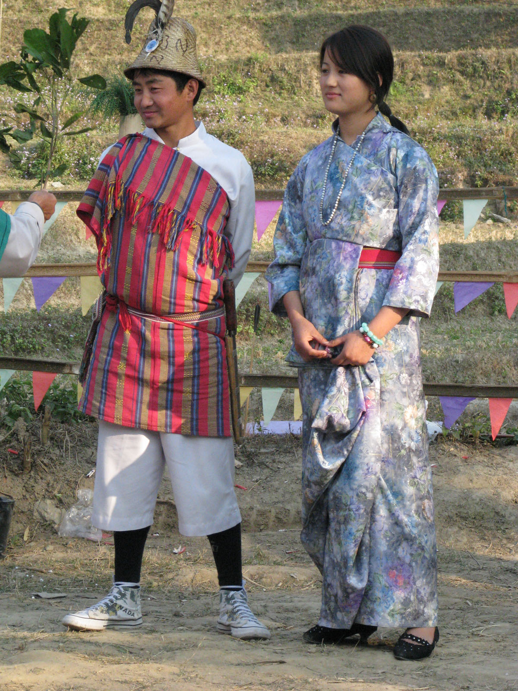

Bhutia Tribal Dress
Bakhu is a tribal dress worn by both men and women. It is similar to a Tibetan chuba. Bakhu is a loose cloth tied around the neck and waist by a silk or cotton belt. The women wear it with Honju, a fully-sleeved silk blouse. A jacket called Kushen is also worn on it. Recently, there have been many variations, like the women pairing it with jeans.